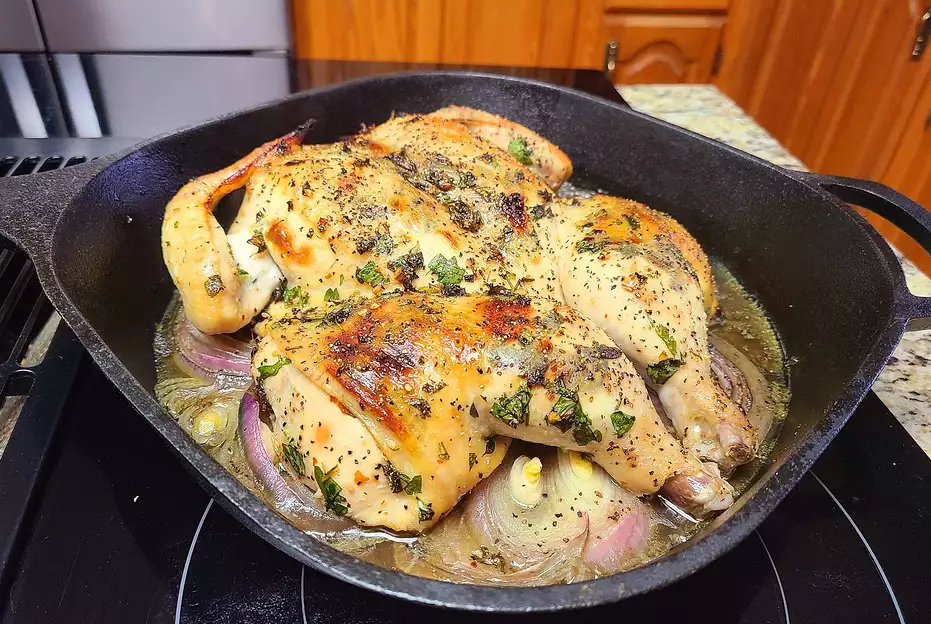

Go to main page
Chimichurri Baked Chicken

Description
Chimichurri is a dish from Argentina that is usually served over grilled chicken or steak. This is my version, which may or may not be authentic.
Ingredients
- ½ cup finely chopped fresh parsley
- 2 ½ tablespoons olive oil
- 2 tablespoons chopped fresh oregano leaves
- 1 tablespoon red wine vinegar
- 2 cloves garlic, minced
- ¼ teaspoon salt
- ⅛ teaspoon red pepper flakes
- 1 pinch freshly ground black pepper
- 1 (3 pound) whole chicken
- 1 teaspoon olive oil
- 1 large onion, sliced
- ½ cup chicken broth
Steps
- Combine parsley, 2 1/2 tablespoons olive oil, oregano, vinegar, garlic, salt, red pepper flakes, and black pepper in a bowl; mix the chimichurri thoroughly.
- Place chicken on a cutting board and remove the backbone using kitchen shears. Press down on the breast with the heel of your hand to flatten. Loosen the skin of the chicken carefully and rub the chimichurri underneath, distributing it evenly. Wrap the chicken in plastic wrap and refrigerate for 24 hours.
- Allow chicken to come to room temperature for no more than 1 hour before baking.
- Preheat oven to 450 degrees F (230 degrees C).
- Rub 1 teaspoon olive oil over the chicken; season with salt and pepper. Place onion in a cast-iron skillet. Pour chicken broth over onion. Place seasoned chicken on top.
- Bake in the preheated oven until no longer pink at the bone and the juices run clear, about 45 minutes. An instant-read thermometer inserted into the thickest part of the meat, near the bone, should read 165 degrees F (74 degrees C). Allow chicken to rest in a warm area for 10 minutes before slicing.
Reference
allrecipes.com